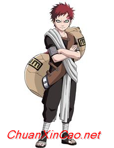

Toggle navigation
动漫周刊
综述
(current)
简述
分类
海贼王
火影忍者
名侦探柯南
七龙珠
哆啦A梦
关于
上一张
下一张
海贼王
去看漫画
火影忍者
去看漫画
名侦探柯南
去看漫画
七龙珠
去看漫画
哆啦A梦
去看漫画
人物介绍
海贼王
火影忍者
名侦探柯南
七龙珠
哆啦A梦
蒙奇·D·路飞
蒙奇·D·路飞 （モンキー D ?ルフィ，Monkey·D·Luffy）是日本人气动漫 《海贼王》中的主人公。草帽海贼团船长，特征是头戴草帽，天性乐观、善良、天真、单纯、善恶分明、容易被感动、顽强、坚定；喜欢探险，最爱吃肉，有时候脑子里会少一根筋，做出一些傻里傻气的事情，但在关键时刻是一个非常靠得住的人，并表现出超出常人的冷静和机智，属于那种遇强则强的类型。
娜美
娜美是日本漫画《海贼王》中的女主角。草帽海贼团的航海士。特征是橘色的短发（两年后为波浪长发）和左肩的刺青（风车与橘子的图案）。使用棍术，现在武器为“魔法天候棒”。头脑聪明又机灵，精通气象学和航海术，擅长偷术，能用身体感知天气，完美指示航路，是个能精确画出航海图的天才航海士。本质上是个细心、善良、重视感情、嫉恶如仇、偶尔有些温柔的能干的女性。最喜欢钱和橘子，梦想是要画出全世界的地图。
山治
山治（サンジ，Sanji）是日本人气动漫《海贼王》中的人物。草帽海贼团厨师，金发，有着卷曲眉毛，永远遮住半边脸的家伙，香烟不离口，海贼中的绅士。小时候跟随大海贼红脚·哲普学习厨艺。武器为不怕斩击和耐热的常亮皮鞋，踢技以快准狠被海军称之为“黑足”，但从不愿意伤害任何的女性，哪怕是敌人。
乔巴
托尼托尼·乔巴(トニ一トニ一 チョッバ，Tony Tony Chopper )是日本人气漫画《海贼王》中的人物。乔巴是草帽海贼团的船医，吃了人人果实的驯鹿能力者，人人驯鹿，可用蓝波球进行八段身体变形，被人称赞时，没办法遮掩自己的情绪；招牌动作是常躲错边，老是跟乌索普一搭一唱。
乌索普
乌索普（ウソップ，Usopp）是日本人气漫画《海贼王》中的人物。草帽海贼团狙击手，特征为头戴狙击防风镜、浅啡色头巾，长鼻子。小时候是出名的吹牛大王，和村里的几个孩子组成“乌索普海贼团”，自称乌索普船长。发现克洛船长的阴谋后，立志要保护村里的人，和路飞并肩作战。
妮可·罗宾
妮可·罗宾(ニコ·ロビン ，Nico·Robin)是日本人气漫画《海贼王》中的人物。草帽海贼团的考古学家，出生在西海的考古学之岛“奥哈拉”。特征是头发长刘海后梳，额上架一副橙色眼镜，身穿一件深亮蓝马甲和粉橙色印花长裙，吃了“花花果实”的恶魔果实能力者，能让身体的任何部位像开花一样长在视线范围内的任何有形体的事物上并作出攻击或其他用途。
弗兰奇
弗兰奇，动漫《海贼王》中的人物。原本是水都解体商兼赏金猎人集团“弗兰奇家族”的一家之主，是个“改造人”，被称为水之七岛的流氓头子弗兰奇，口碑不好，因为抢了草帽海贼团的2亿元和打伤乌索普的事件，而和草帽海贼团处于敌对状态，后来因司法之岛事件后，加入草帽海贼团，为万里阳光（桑尼（sunny））号的创造者。
布鲁克
布鲁克（ブルック， Brook）是日本人气漫画《海贼王》中的人物。号称“鼻歌”，现为草帽海贼团音乐家。原本是某国护卫队团长，后加入伦巴海贼团，50年前跟鲸鱼拉布约定在“双子峡”重逢。
甚平
甚平，日本漫画《海贼王》及其衍生作品中的人物，为人行侠仗义，人称"海侠"，悬赏金4亿3800万贝里。原为"王下七武海"，在费舍尔·泰格死后成为太阳海贼团的船长，后在蛋糕岛宣布加入草帽海贼团成为舵手
漩涡鸣人
因为身上封印着邪恶的九尾妖狐，无父无母的他受尽了村人的冷眼与歧视，他下定决心要成为第六代火影，让所有人都认同他的存在，在旗木卡卡西老师的带领下，与佐助、小樱一起踏上了修行之路。 如今，他已经因为阻止佩恩袭击木叶而成为一名人人称道的英雄，并且在第四次忍界大战中发挥着举足轻重的作用。
春野樱
春野樱，动漫《火影忍者》中的人物。新一代杰出的医疗忍者，第五代火影千手纲手的弟子，与漩涡鸣人、宇智波佐助隶属于旗木卡卡西领导的第七班。具有良好的查克拉控制能力与清晰的脑力，擅长怪力与医疗忍术。经过自己艰苦卓绝的努力奋斗，春野樱从一个平凡女孩，最终成长为一个贯彻自己座右铭“勇气”的优秀忍者。
旗木卡卡西
火之国木叶村的精英上忍，原木叶暗部成员，漩涡鸣人、宇智波佐助、春野樱的指导老师，四代火影波风水门的弟子，后成为火之国木叶村第六代火影。左眼为宇智波带土赠予的写轮眼（被宇智波斑夺 去后被鸣人用普通眼睛复明），因使用写轮眼复制了上千种忍术而被称为“拷贝忍者”。
宇智波佐助
宇智波佐助，日本动漫《火影忍者》中的第二男主角，宇智波一族的天才忍者，六道仙人长子因陀罗的转世。 年幼时目睹宇智波一族被哥哥宇智波鼬所灭，从而走上复仇之路。为了得到复仇力量，与漩涡鸣人在终结之谷大战一场后离开村子并追随大蛇丸。三年后，佐助吸收了大蛇丸的力量并杀死了鼬，进而了解灭族真相，决定摧毁木叶。第四次忍界大战中，佐助听完秽土转生的历代火影答复后决定继承鼬的意志守护木叶，并期望成为火影。
日向雏田
日向雏田，动漫《火影忍者》中的人物。火之国木叶村的中忍，木叶名门日向一族宗家的嫡女，日向宁次的堂妹。从小喜欢漩涡鸣人，原本是个性格柔弱的女孩，但是在鸣人的影响下逐渐变得坚强，并渐渐成长为一名优秀的女忍者。拥有能看穿一切事物的“白眼”，并擅长使用日向家流传的名为“柔拳”的体术。
日向宁次
日向宁次，动漫《火影忍者》《火影忍者疾风传之梦中人之战 真人版》《火影忍者 OVA》《火影忍者之隐蔽瀑布处的战斗-我是英雄 OVA》《火影忍者之寻找红色四叶三叶草 OVA》《火影忍者之上忍对下忍!无差别混战大会 OVA》《火影忍者 剧场版》中的人物。日本动漫《火影忍者》中的人物。火之国木叶村的上忍，木叶名门日向一族分家的成员，日向雏田的堂兄。
我爱罗
我爱罗，日本动漫《火影忍者》系列中的人物。风之国·砂隐村的第五代风影。小时候由于体内封印着一尾守鹤而被村人恐惧，又因为至亲之人的背叛而一度变得冷酷无情、喜好杀戮，但在和漩涡鸣人一战后，由于鸣人的影响而逐渐摆脱心魔。

江户川柯南(工藤新一)
外表看似小孩，其真实身份是被称作“日本警察的救世主”的高中生侦探——工藤新一。和青梅竹马的毛利兰在游乐园约会时，目击到黑衣组织的交易现场，被灌下开发中的毒药——APTX4869，身体缩小了。从此以后化名江户川柯南，寄住在父亲以侦探为业的小兰家，过着日复一日解决案件的日子。
毛利兰
工藤新一的青梅竹马。空手道部主将，拥有都大会第一名实力的文武双全的女高中生。一边等待突然消失的新一的归来，一边温柔地看护着寄住的柯南以及少年侦探团。 本作中，父亲小五郎被当作爆炸恐袭的犯人而被逮捕，因而激烈地动摇。向身为律师的分居中的母亲妃英理求助。
阿笠博士
阿笠，动漫《名侦探柯南》中的人物。自称天才发明家，热衷于科学实验。工藤新一家的邻居，未婚。在新一被变小后，他介绍新一寄宿在毛利小五郎家中，而且还发明了许多设备帮助新一破案，是柯南最信任的理解者、协助者。
灰原哀
同柯南一样喝下APTX4869变成小孩子的样子。虽然是黑衣组织中开发药物的研究者，但姐姐被杀后开始逃亡。本作中也是柯南的支援。 日本动漫《名侦探柯南》中的主要人物，女科学家，本名宫野志保 。原为黑衣组织的成员雪莉（Sherry），是能使身体缩小的药物——“APTX4869”的发明者。在姐姐宫野明美遭组织杀害后，因反抗组织而被囚禁，服下APTX4869，身体缩小后背叛组织逃亡，化名灰原哀，寄宿于阿笠博士家中，就读于帝丹小学一年B班。
吉田步美
少年侦探团的偶像存在。自称“可爱的女侦探”，好奇心旺盛，但也是个爱哭鬼。另外，很喜欢柯南，她在灰原转学之初，也曾含有醋意地问“你喜欢柯南吗”，但现在是少年侦探团女成员，进行着团队合作。
圆谷光彦
认真的头脑派，有时也会解救柯南的危机……有协作性，是个绅士，有时也会守护步美和灰原。 日本动漫《名侦探柯南》中人物。就读于帝丹小学1年级B班，少年侦探团成员。自幼和小岛元太和吉田步美在一起。喜欢阅读及吸取知识，学识在元太和步美之上，在同年龄的孩童中显得博学，对江户川柯南和灰原哀的学识非常钦佩。喜欢同班同学吉田步美，后喜欢灰原哀。
小岛元太
自称少年侦探团团长。经常说错话，有无人匹敌的强大正义感。有很大食量的吃货，最喜欢鳗鱼饭。 动漫作品《名侦探柯南》中人物。帝丹小学1年B班学生，少年侦探团成员，自封团长。虽然有时会胡乱说话，却充满正义感。身体肥胖，食量极大，最喜欢鳗鱼饭，遇到任何事情都会先向食物方面想。喜欢吉田步美。
孙悟空/卡卡罗特
孙悟空，原名卡卡罗特（日文：カカロット，英文： Kakarotto），日本漫画家鸟山明作品《龙珠》中的主角。原为宇宙战斗民族贝吉塔星上的赛亚人，后流落地球取名孙悟空，是一个正义和勇敢的角色，多次拯救地球和宇宙，遇强则强，无限突破自身。
贝吉塔
贝吉塔，动漫《七龙珠》《龙珠》中的人物。日本动漫《七龙珠》中的主要角色。赛亚人的王子，是一个狡猾的阴谋家，聪明而又自尊性极高的人物。拥有极高的自尊心，最大的对手是孙悟空（卡卡罗特），一直在为了超越孙悟空而奋斗。初次登场时是以入侵地球的反派角
孙悟饭
孙悟饭，动漫《七龙珠》《龙珠》中的人物。孙悟饭是鸟山明所作《七龙珠》中的重要人物，是主人公孙悟空的长子。拥有强大的潜能，不过发怒时才能完全发挥。性格不像父亲作为纯种战斗民族那般好战，而且在母亲的导训下勤奋地读书，理想是长大成为一名学者。善良
短笛/比克
短笛，动漫《七龙珠》《龙珠》中的人物。短笛大魔王是日本火爆动漫《七龙珠》的第二主角，分为两代，一代恶一代善。是鸟山明最喜欢的角色，也是剧集中一个极其重要的角色，以其独特魅力获得极高人气，拥趸无数。 本和天神是一个那美克星人，后来因为天神
孙悟天
孙悟天，动漫《七龙珠》《龙珠》中的人物。孙悟天是日本动漫《七龙珠》中的角色之一。孙悟空和琪琪的第二个儿子，在沙鲁游戏后所生的，样貌和孙悟空十分相似。在7岁那年他已能够变成超级赛亚人，使他的哥哥悟饭非常惊讶。他与特兰克斯融合成为悟天克斯时他们
特兰克斯
特兰克斯，动漫《七龙珠》《龙珠》中的人物。特兰克斯是日本漫画家鸟山明所著作著名漫画《龙珠Z》人造人篇的重要人物、《龙珠GT》的主要人物，贝吉塔和布尔玛之子，赛亚人和地球人的混血儿之一。在《七龙珠》中出现3个特兰克斯，但都是同一人，只是身处时代
克林
克林，动漫《七龙珠》《龙珠》中的人物。克林，日本漫画《七龙珠》中的人物，另外译名（小林、库林、枯林、无限） 。与孙悟空一同在龟仙人门下习武。地球人中最强的战士之一。妻子人造人18号，女儿玛萝。
哆啦A梦
哆啦a梦是一只来自未来世界的猫型机器人，用自己神奇的百宝袋和各种奇妙的道具帮助大雄解决各种困难。原来是统一制造的机器猫，和猫的样子差不多（但是却经常被误会成是狸猫），通体黄色，22世纪的一天，世修（大雄的孙子）正在捏一个哆啦A梦的泥人，准备在哆啦A梦的生日上送给哆啦A梦，但就是耳朵捏的不像，于是世修就拿出了一个形如老鼠的道具，并让“老鼠”帮他把泥人的耳朵捏好，但“老鼠”好像理解错了，竟然跑到正在睡觉的在哆啦A梦身上，并把哆啦A梦的耳朵啃得和泥人的一样，这时哆啦A梦醒了，看见老鼠正在啃他的耳朵后嘴里大叫老鼠，并且到处跑。
大雄
野比大雄，简称大雄，是日本漫画家藤子·F·不二雄创作的科幻喜剧漫画《哆啦A梦》中的男主角。大雄性子懦弱，胆小怕事，丢三落四。优点是有责任心，善良正直。是一个“为别人的不幸而伤心，会祈求别人幸福的人”。哆啦A梦即是由野比大雄的玄孙野比世修派来帮助他、挖掘他的潜质，扭转他不幸的命运的。
哆啦美
哆啦美和哥哥哆啦A梦不一样，是一只优秀的机器猫。在哆啦A梦回22世纪检查时，哆啦美便暂时代替哥哥帮助大雄。有冷静的头脑，很少发脾气，做事比哆啦A梦谨慎，但是哆啦美做事太过锲而不舍，因为哆啦美是高价货，她使用百宝袋的时候不会像哆啦A梦一般！哆啦美的百宝袋比哆啦A梦的更为精致耐用。有时候，哆啦A梦会叫哆啦美帮忙收拾残局。兄妹感情很好。哆啦美耳朵因为怕刺激到哆啦A梦才被制成蝴蝶结的形状，看起来很华丽。通过这个耳朵，哆啦美可以听到远处的声音，也能够听懂动物的语言。明明是猫型机器人，却没有胡须？因为蝴蝶结型的耳朵具有雷达功能，所以胡须就没有必要了。哆啦美做事认真、努力，是学校里的优等生。不过，唯一的缺点就是有时会认真过度，不懂变通。
静香
源静香是《哆啦A梦》中的女主角。大雄的好朋友，也是大雄未来的妻子。聪明乖巧、成绩优秀、心地善良、善解人意，深受大家喜爱，是大雄他们梦中的情人。缺点是有洁癖（一天要洗三次澡），而且拉小提琴拉出的琴声甚至比胖虎的歌还具有破坏力。
胖虎
刚田武，中文又译胖虎、技安。是日本动画及漫画《哆啦A梦》中一位重要的角色，设定在1964年6月15日出生。 刚田武在漫画中是所有孩子们里体型最胖最高的，外号“巨人”（ジャイアン），是英语 Giant的片假名读法，港台地区旧译技安是这个绰号的音译。哆啦A梦和孩子们一般都用绰号而非本名称呼他。长辈们称呼胖虎则称之本名“小武”而不用绰号，但在中文译制的漫画和卡通中却完全忽略此特点。个性粗暴，容易冲动，什么事都想着用武力解决。经常借别人的东西不还。
小夫
骨川小夫是《哆啦A梦》的主要角色之一。家境富裕，娇生惯养，成绩不太差，性格自大、骄傲、逢迎谄媚、爱炫耀。胖虎的好搭档，大雄的又一敌人。欺软怕硬，狡猾，总把大雄当成是最便宜的玩具。
×
关于此网页
这个网页是用bootstrap制作的，初学者做的不好的地方请多多包涵~~~